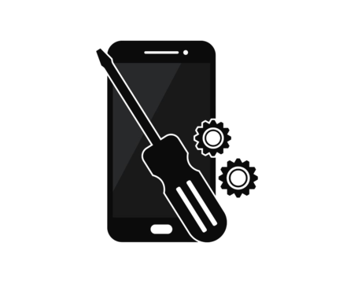
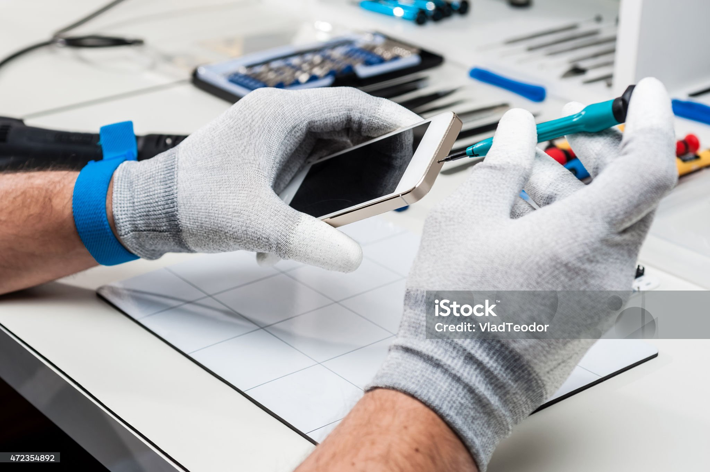

Recyctrone

🟢 At Recyctrone, when you come to us, you won’t be disappointed!😊
🟢If you want your phone to be repaired, we’ll search our
entire inventory to find the part your phone needs.✅
🟢 And if you don’t want to spend more money on your old phone, why
not get some cash for it instead of just throwing it in the trash?
🚮
🟢 Yes, you can get money for it! Our technicians will evaluate
your phone and offer you a fair price in exchange. 🤑
🟢So, what will we do with your phone? We’ll separate the working
parts to add to our inventory, and the broken parts—like batteries,
screens, and plastic—will be safely recycled.♻️
🟢 By giving us your old phone, you're helping protect the
environment and earning some money at the same time. Isn’t that
wonderful? 😃

How can you find us?
You can find us in our partners' shops located in these locations: